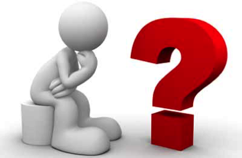

|  | Uitslag 26ste FAMILIEQUIZ (vrijdag 17 februari 2017) |
| Plaats | Nr | Ploegnaam | Totaal |
| 1 | 42 | Tis kleir zand dawe spukken | 118 |
| 2 | 18 | Amnesia | 113 |
| 3 | 36 | Handelsoep met letterkes | 108* |
| 4 | 57 | Sushisausenshop chez José | 108* |
| 5 | 43 | Veur de leute | 105 |
| 6 | 4 | S.CH.O.L. | 104 |
| 7 | 54 | De dummies | 103 |
| 8 | 28 | Marvin the paranoid android | 102 |
| 9 | 19 | Kga 't zeggen Walter | 101 |
| 10 | 11 | Wir schaffen das | 100* |
| 11 | 22 | De Ranzige Rakkers | 100* |
| 12 | 13 | kzout duust kiern zeggen | 99 |
| 13 | 53 | dhaese en waelput | 98* |
| 14 | 3 | Kapelleken | 98* |
| 15 | 8 | Roma Victor | 97* |
| 16 | 41 | Langs de neus weg | 97* |
| 17 | 21 | Discobar Fralo | 96* |
| 18 | 15 | Kleurenwist | 96* |
| 19 | 26 | Toine Zorro | 94* |
| 20 | 48 | Sjareltje Vuylsteke | 94* |
| 21 | 38 | Ogirami | 94* |
| 22 | 27 | Team Noedel | 91* |
| 23 | 45 | chaos | 91* |
| 24 | 25 | Quizketiers | 91* |
| 25 | 32 | Winnen is ook wat... | 91* |
| 26 | 34 | 't zal voor volgend jaar zijn | 90 |
| 27 | 12 | Tsémanie | 89* |
| 28 | 37 | Plata o plomo | 89* |
| 29 | 1 | Ploeg zonder naam | 89* |
| 30 | 23 | The Roadrunners | 88 |
| 31 | 24 | Tafel Bier | 87 |
| 32 | 9 | Teambuilders | 86 |
| 33 | 16 | Team Rocket | 85 |
| 34 | 46 | WTC Gezoarde | 84* |
| 35 | 51 | De Einsteins van Snoa | 84* |
| 36 | 44 | 2017 is van ons | 83 |
| 37 | 30 | Vogels voor de kat | 82 |
| 38 | 39 | Oragimi | 80* |
| 39 | 17 | The Force | 80* |
| 40 | 55 | Team B | 80* |
| 41 | 40 | De rest van den hoop | 79 |
| 42 | 29 | Een deel van den hoop | 78* |
| 43 | 49 | Brainhurricane | 78* |
| 44 | 6 | Vitesken | 76 |
| 45 | 47 | The passion of Lochrist | 75 |
| 46 | 10 | The Most Awesome Guys | 74 |
| 47 | 5 | het zonnebloempjes P-team | 70 |
| 48 | 7 | Het zonnebloempjes N-team | 69* |
| 49 | 50 | Reigerstraat 4 | 69* |
| 50 | 52 | Valar Morghulis | 66* |
| 51 | 33 | De Herrezen Glorie | 66* |
| 52 | 20 | Badeendjes | 66* |
| 53 | 31 | De bende van twijfel | 66* |
| 54 | 56 | De grote gezinnen | 63 |
| 55 | 2 | Orde van het Spaghettimonster | 61* |
| 56 | 14 | De quizzies | 61* |